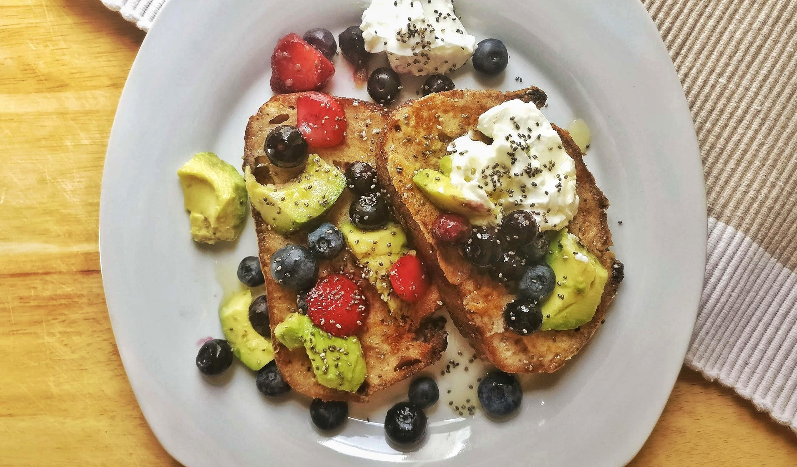

French Toast With Fruit and Yogurt

INGREDIENTS for 2 people
80ml of milk
1 teaspoon of cinnamon
4 slices of bread
1 tablespoon of butter (to fry)
1 tablespoon of agave
fruit of your choice
a pinch of chia seeds
1 tablespoon of natural yogurt
INSTRUCTIONS
Beat the eggs, milk and cinnamon together;
Dip each slice of bread into the egg mixture, allowing bread soak up some of the mixture;
Melt some butter over a large skillet on medium high heat. Add as many slices of bread onto the skillet as will fit at a time and fry on both sides until brown.
Display in a plate, with some fruits of your choice on the top, topping with chia seeds and agave. Add a tablespoon of natural yogurt on the side and enjoy!